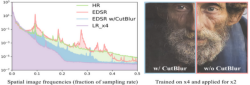
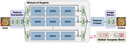
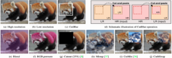
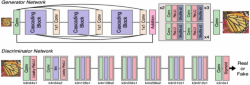
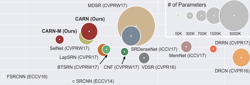
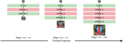
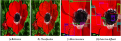

|
I am a PhD student in the Department of Artificial Intelligence, Ajou University (Suwon, Korea). |
|
[Github]
[CV]
[Google Scholar]
[ML blog (ko)] |
Publications
|  |
Data Augmentation for Low-Level Vision: CutBlur and Mixture-of-Augmentation Jaejun Yoo*, Namhyuk Ahn*, Kyung-Ah Sohn (* indicates equal contribution) Submitted to IEEE Transactions on Pattern Analysis and Machine Intelligence (TPAMI) 2021. [arXiv] |

|
What is Wrong with One-Class Anomaly Detection? JuneKyu Park, Jeong-Hyeon Moon, Namhyuk Ahn, Kyung-Ah Sohn International Conference on Learning Representations Workshops (ICLRW), 2021. [arXiv] [Github] |
|  |
Restoring Spatially-Heterogeneous Distortions using Mixture of Experts Network Sijin Kim*, Namhyuk Ahn*, Kyung-Ah Sohn (* indicates equal contribution) Asian Conferecne on Computer Vision (ACCV), 2020. [arXiv] [Github] [Video] |
|  |
Rethinking Data Augmentation for Image Super-resolution: A Comprehensive Analysis and a New Strategy Jaejun Yoo*, Namhyuk Ahn*, Kyung-Ah Sohn (* indicates equal contribution) IEEE Conference on Computer Vision and Pattern Recognition (CVPR), 2020. [arXiv] [Github] [Video] |
|
SimUSR: A Simple but Strong Baseline for Unsupervised Image
Super-resolution Namhyuk Ahn*, Jaejun Yoo*, Kyung-Ah Sohn (* indicates equal contribution) IEEE Conference on Computer Vision and Pattern Recognition Workshops (CVPRW), 2020. [arXiv] [Video] |
|
|  |
Efficient Deep Neural Network for Photo-realistic Image Super-Resolution Namhyuk Ahn, Byungkon Kang, Kyung-Ah Sohn Submitted to Pattern Recognition (PR) 2019 (under minor revision). [arXiv] [Github] |
|  |
Fast, Accurate, and Lightweight Super-Resolution with Cascading Residual Network Namhyuk Ahn, Byungkon Kang, Kyung-Ah Sohn European Conference on Computer Vision (ECCV), 2018. [arXiv] [Github] |
|  |
Image Super-resolution via Progressive Cascading Residual Network Namhyuk Ahn, Byungkon Kang, Kyung-Ah Sohn IEEE Conference on Computer Vision and Pattern Recognition Workshops (CVPRW), 2018. [Paper] [Github] |
|  |
Image Distortion Detection using Convolutional Neural Network Namhyuk Ahn, Byungkon Kang, Kyung-Ah Sohn Asian Conference on Pattern Recognition (ACPR), 2017. [arXiv] |
Education
- Ph.D. Student in Computer Engineering at Ajou University (Mar. 2016 ~ Present)
Advisor: Prof. Kyung-Ah Sohn - Bachelor of Media in Digital Media from Ajou University (Mar. 2012 ~ Feb. 2016)
Work Experience
- Visiting Researcher, Clova AI Research, Naver Corp. (Sep. 2019 ~ Oct. 2020)
Mentor:Dr. Jaejun Yoo, Dr. Youngjung Uh and Yunjey Choi - Intern, Clova AI, Naver Corp. (June 2018 ~ Aug. 2018)
Mentor: Kwangjin Oh
Awards
- Honorable Mention Award, NTIRE 2018 Challenge (June 2018)
Single image super-resolution challenge (Track 1: Classic Bicubic) on NTIRE workshop in conjunction with CVPR 2018.
Teaching Experience
- Lecture Instructor, Fastcampus (Aug. 2017)
lecture material (korean).
Professional Service
- Reviewer
Journal: TPAMI, TIP, TMM, TCVST